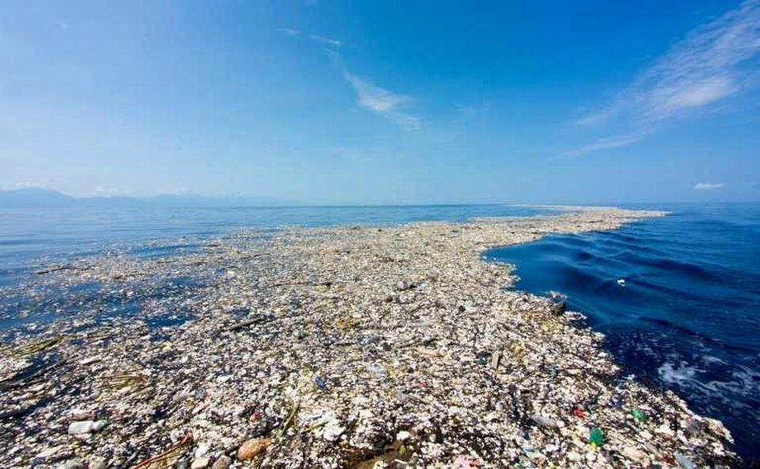

Addressing The Great Pacific Garbage Patch
"We are tied to ocean. And when we go back to the sea, whether it is to sail or to watch - we are going back from whence we came." - John F. Kennedy

What I'm Going To Be Talking About
- What The Great Pacific Garbage Patch Is
- Why It Is Such A Threat
- How You Can Help With This Major Issue
- Other Organisation Who Are Working Towards Solving This Issue
- Other Important Piecesof Information To Help Realize This Major Issue
Other Inspiring Quotes From Environmental Activists on Ocean Pollution
| Quotes | Written By |
|---|---|
| "The ocean stirs the heart, inspires the imagination and brings eternal joy to the soul." | Robert Wyland |
| "Water and air, the two essential fluids on which all life depends, have become global garbage cans." | Jaques Yves Cousteau |
| "If we wipe out the fish,the oceans are going to die. If the oceans die, we die. We can't live on this planet with a dead ocean." | Paul Watson |
| "Limitless and immortal, the waters are the beginning and end of all things on Earth." | Heinrich Zimmer |